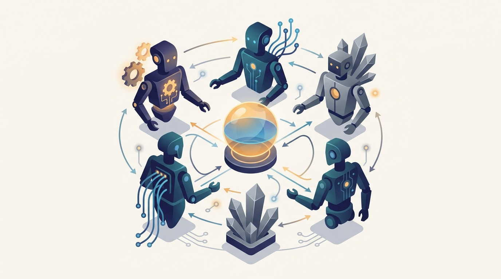

"I shipped a single brilliant agent and called it done. Then it had to share a hallway with four other brilliant agents, none of whom would yield, and I learned that intelligence is the easy part and getting along is the system."
An Architect Who Confused One Agent for a Society
A multi-agent system is a society of autonomous agents that perceive, decide, communicate, and act on local information inside a shared environment, and the discipline of this chapter is the engineering of that society: the internal architectures that make a single agent behave sensibly, and the communication, coordination, negotiation, coalition, allocation, consensus, and trust protocols that let many of them function as a coherent whole without any central controller. Chapter 27 distributed intelligence into cooperating problem-solvers and Chapter 28 gave the strategic theory of agents whose goals may conflict, but neither built the running system. That is the work here. The chapter takes the autonomous agent seriously as a unit of software, defines it precisely, and then asks the question that every distributed system asks in its own dialect: given many such units, each with a partial view of the world and authority to act on it, how do they exchange meaning, divide work, settle disagreements, and agree on shared facts so that their collective behavior is useful rather than chaotic? It answers with the standard apparatus of the field, developed here for the distributed AI setting: agent architectures from reactive to deliberative to hybrid, the environment models that determine how hard the problem is, agent communication languages and speech acts, coordination and negotiation protocols, coalition formation and task allocation by auction, distributed consensus under faults, and trust and reputation for open systems where not every agent can be assumed honest. This is the engineering core of Part VI: where Chapter 28 gave the theory of strategic interaction, this chapter gives the architectures and protocols that turn that theory into societies of interacting agents, and every later chapter, swarms, orchestration, and the learning agents of Chapter 30, extends what is built here.
Chapter Overview
This is the engineering chapter of Part VI, and its subject is the gap between a single intelligent agent and a working society of them. The ten sections develop that subject in order. They begin with the deceptively hard question of what an agent actually is, then build the internal architectures that turn perception into action, then place those agents in environments whose properties decide how hard coordination will be, and then work systematically through the protocols that govern shared life: communication, coordination, negotiation, coalition formation, task allocation, consensus, and finally trust and reputation. The through-line is that none of it has a center. Every agent holds a partial view, every interaction is a message, and every collective outcome must emerge from local decisions.
The ten sections fall into three movements. The first builds the agent: Section 29.1 defines what an agent is, Section 29.2 develops the reactive, deliberative, and hybrid architectures that structure its internal reasoning, and Section 29.3 sets agents loose in multi-agent environments and classifies what makes those environments easy or hard. The second movement is about interaction: Section 29.4 develops communication and agent communication languages, Section 29.5 builds coordination protocols, Section 29.6 turns to negotiation when interests diverge, and Section 29.7 lets agents form coalitions to capture shared value. The third movement is about collective decision and reliance: Section 29.8 allocates tasks across agents, Section 29.9 reaches consensus on shared values despite faults and delays, and Section 29.10 closes with trust and reputation for open systems where honesty cannot be assumed.
Read in order, the ten sections take you from "here is one agent" to a working understanding of how a population of them becomes a system: define the agent, give it an architecture, drop it into a shared environment, let it speak a common language, coordinate its actions with its peers, negotiate when goals collide, form coalitions when cooperation pays, divide the work, agree on shared facts despite failures, and decide whom to trust. The argument is cumulative and it carries the strategic toolkit of Chapter 28 into running code: equilibria become coordination outcomes, mechanisms become negotiation and auction protocols, and the cooperative-game theory of coalitions becomes coalition-formation algorithms. The thread runs straight out of the chapter into the multi-agent reinforcement learning of Chapter 30, where these agents stop being designed and start to learn.
Prerequisites
This chapter stands on the two chapters immediately before it in Part VI, and it assumes you have read them. From Chapter 27: Distributed Artificial Intelligence you carry the central reframing the whole part builds on: that the unit of distribution has become the autonomous agent, an entity with its own information, its own goals, and the authority to act, and that the classical machinery of cooperating problem-solvers, blackboards, the contract net, and distributed problem decomposition, is the historical and conceptual ground this chapter's protocols grow from. From Chapter 28: Game-Theoretic Foundations for Multi-Agent AI you carry the strategic vocabulary that the negotiation, coalition, and task-allocation sections here turn into running protocols: what a game is, what an equilibrium means, how coalitions split their value through the core and the Shapley value, and how mechanism design and auctions make truthful behavior self-interested. This chapter does not re-derive those results; it builds the systems that embody them. Beyond Part VI, the chapter assumes the distributed-systems literacy of Part I, partial views, message passing, the absence of a global clock, and faults as the normal case, because a multi-agent system is a distributed system whose nodes happen to be autonomous decision-makers, and the consensus material in Section 29.9 in particular leans on the failure models introduced earlier in the book. Light formal notation and the ability to read pseudocode are assumed throughout, as in the rest of the book. No prior exposure to agent-oriented programming is required; Section 29.1 defines the agent from first principles before anything is built on it.
Learning Objectives
- Define what an agent is in precise terms, distinguishing autonomy, reactivity, proactiveness, and social ability, and explain why a multi-agent system is more than a collection of independent programs.
- Compare reactive, deliberative, and hybrid agent architectures, including the subsumption and BDI models, and choose an architecture appropriate to an environment's demands.
- Classify a multi-agent environment along the standard axes, accessible or inaccessible, deterministic or stochastic, static or dynamic, and reason about how each property changes the coordination problem.
- Design agent communication using speech-act theory and agent communication languages such as KQML and FIPA ACL, and explain why agents need a shared language of intention rather than raw data exchange.
- Build coordination and negotiation protocols that let self-interested agents reach joint decisions without a central controller, connecting them to the equilibria and mechanisms of Chapter 28.
- Form coalitions and allocate tasks across agents using cooperative-game solution concepts and auction-based methods such as consensus-based bundle allocation.
- Reach distributed consensus on a shared value despite faults and delays, and build trust and reputation systems that let agents decide whom to rely on in open multi-agent settings.
If you keep one thing from this chapter, keep this: a multi-agent system is the engineering of distributed intelligence, a society of autonomous agents that perceive and act on local views inside a shared environment, and building one means designing both the internal architecture that makes a single agent behave well and the communication, coordination, negotiation, coalition, allocation, consensus, and trust protocols through which many of them become a coherent whole with no central controller. Read forward, the sections build that society in the order an architect needs it: first define and structure the agent, then place it among others, then give the population the protocols of shared life. Read as a question, the chapter asks of any system of many autonomous agents: what is an agent, how is its reasoning structured, what kind of environment does it live in, how do agents exchange meaning, how do they coordinate and negotiate, when do they form coalitions, how do they divide work, how do they agree on shared facts despite failures, and how do they decide whom to trust. The roadmap below walks the ten sections that answer it, and the last one carries the thread straight into the learning agents of the chapter ahead.
Chapter Roadmap
- 29.1 What Is an Agent? Defines the autonomous agent precisely, distinguishing autonomy, reactivity, proactiveness, and social ability, and shows why a society of agents is qualitatively more than a set of independent programs.
- 29.2 Agent Architectures Builds the internal structures that turn perception into action, contrasting reactive subsumption, deliberative belief-desire-intention, and the hybrid layered designs that combine them.
- 29.3 Multi-Agent Environments Sets agents loose in shared worlds and classifies those worlds along the axes, accessible, deterministic, static, that determine how hard coordination will be.
- 29.4 Communication Develops agent communication through speech-act theory and agent communication languages such as KQML and FIPA ACL, the shared language of intention that lets agents exchange meaning rather than raw data.
- 29.5 Coordination Builds the protocols by which agents align their actions toward joint goals without a central controller, turning the equilibria of Chapter 28 into running coordination mechanisms.
- 29.6 Negotiation Turns to interactions where interests diverge, developing bargaining protocols through which self-interested agents reach agreements neither could impose alone.
- 29.7 Coalition Formation Lets agents band together to capture value none could create alone, building the algorithms that form coalitions and divide their worth using the cooperative-game theory of Chapter 28.
- 29.8 Task Allocation Divides labor across agents, developing auction-based and consensus-based allocation methods that assign tasks efficiently without a central scheduler.
- 29.9 Consensus Reaches agreement on a shared value across a network of agents despite faults and delays, developing the distributed consensus protocols that underpin reliable collective decision.
- 29.10 Trust and Reputation Closes the chapter with open systems where honesty cannot be assumed, building the trust and reputation mechanisms that let agents decide whom to rely on.
Read the ten sections in order and you will hold a working model of how autonomous agents become a system: Section 29.1 defines the agent, Section 29.2 builds its architectures, Section 29.3 classifies its environment, Section 29.4 gives it a communication language, Section 29.5 builds coordination, Section 29.6 develops negotiation, Section 29.7 forms coalitions, Section 29.8 allocates tasks, Section 29.9 reaches consensus, and Section 29.10 closes with trust and reputation. The thread to watch is the move from the single agent outward to the collective: first we make one agent behave well, then we give the population a common language, then the protocols of coordination and bargaining, and finally the machinery of shared decision and reliance. That thread runs straight out of the chapter: the architectures and protocols built here become the agents whose behaviors are learned rather than designed in the multi-agent reinforcement learning of Chapter 30.
What's Next?
This chapter built the engineering of multi-agent systems: what an agent is, how its reasoning is structured, how a population of agents communicates, coordinates, negotiates, forms coalitions, divides work, reaches consensus, and decides whom to trust. What it has deliberately not done is let the agents learn. Every architecture and protocol here is designed, the behaviors handed to the agents by the engineer rather than discovered by the agents themselves. Chapter 30: Multi-Agent Reinforcement Learning removes that limit. It takes the agents and environments built here and lets the agents learn their policies through interaction, where each agent's learning target shifts as the others learn too, and the strategic foundations of Chapter 28 become the analytical lens for non-stationary multi-agent learning. The distributed reinforcement learning infrastructure of Chapter 20 returns there as the engine that trains populations of agents at scale. Where this chapter gave you the architectures and protocols of designed agent societies, the next gives you societies that learn their own coordination, negotiation, and cooperation. Read Chapter 30 next, and watch the protocols you would have written by hand emerge from learning instead.
Bibliography & Further Reading
Textbooks and Foundations
Wooldridge, M. "An Introduction to MultiAgent Systems." 2nd edition, John Wiley & Sons, 2009. wiley.com
The standard graduate text that defines agents and multi-agent systems and develops architectures, communication, coordination, and negotiation, the general companion reference for the whole chapter.
Shoham, Y., Leyton-Brown, K. "Multiagent Systems: Algorithmic, Game-Theoretic, and Logical Foundations." Cambridge University Press, 2009. masfoundations.org
The freely available graduate text that grounds multi-agent systems in game theory and logic, the formal companion to the coordination, coalition, and task-allocation material here.
Russell, S., Norvig, P. "Artificial Intelligence: A Modern Approach." 4th edition, Pearson, 2020. aima.cs.berkeley.edu
The standard AI textbook whose agent and environment framework underlies the definition of an agent in Section 29.1 and the environment taxonomy of Section 29.3.
Agent Architectures
Brooks, R. A. "A Robust Layered Control System for a Mobile Robot." IEEE Journal on Robotics and Automation, 2(1), 1986. ieeexplore.ieee.org
The paper that introduced the subsumption architecture, the reactive layered control model that anchors the reactive end of Section 29.2.
Rao, A. S., Georgeff, M. P. "BDI Agents: From Theory to Practice." Proceedings of the First International Conference on Multi-Agent Systems (ICMAS), 1995. aaai.org
The work that turned the belief-desire-intention model into a practical agent architecture, the deliberative reasoning model developed in Section 29.2.
Communication Languages
Finin, T., Fritzson, R., McKay, D., McEntire, R. "KQML as an Agent Communication Language." Proceedings of the Third International Conference on Information and Knowledge Management (CIKM), 1994. dl.acm.org
The paper that introduced the Knowledge Query and Manipulation Language, the speech-act-based agent communication language at the heart of Section 29.4.
Foundation for Intelligent Physical Agents. "FIPA ACL Message Structure Specification." FIPA, 2002. fipa.org
The standardized agent communication language specification whose performatives and message structure ground the modern communication protocols of Section 29.4.
Negotiation and Coalitions
Rubinstein, A. "Perfect Equilibrium in a Bargaining Model." Econometrica, 50(1), 1982. jstor.org
The alternating-offers bargaining model with a unique subgame-perfect equilibrium, the theoretical backbone of the negotiation protocols in Section 29.6.
Sandholm, T. "Distributed Rational Decision Making." In Multiagent Systems: A Modern Approach to Distributed Artificial Intelligence (G. Weiss, ed.), MIT Press, 1999. cs.cmu.edu
The chapter-length treatment of coalition formation, negotiation, and contracting among self-interested agents that informs Sections 29.6 through 29.8.
Consensus and Task Allocation
Olfati-Saber, R., Fax, J. A., Murray, R. M. "Consensus and Cooperation in Networked Multi-Agent Systems." Proceedings of the IEEE, 95(1), 2007. ieeexplore.ieee.org
The survey that unified the theory of distributed consensus over agent networks, the foundation of the consensus material in Section 29.9.
Choi, H.-L., Brunet, L., How, J. P. "Consensus-Based Decentralized Auctions for Robust Task Allocation." IEEE Transactions on Robotics, 25(4), 2009. ieeexplore.ieee.org
The paper that introduced consensus-based bundle allocation, the decentralized auction method for robust task allocation developed in Section 29.8.
Trust and Software
Josang, A., Ismail, R., Boyd, C. "A Survey of Trust and Reputation Systems for Online Service Provision." Decision Support Systems, 43(2), 2007. sciencedirect.com
The survey that mapped the landscape of trust and reputation models, the reference framework for the open-system reliance mechanisms of Section 29.10.
Terry, J. K., et al. "PettingZoo: Gym for Multi-Agent Reinforcement Learning." arXiv:2009.14471, 2020. arxiv.org
The open-source library of standardized multi-agent environments, the practical toolkit for building and experimenting with the agent societies of this chapter.